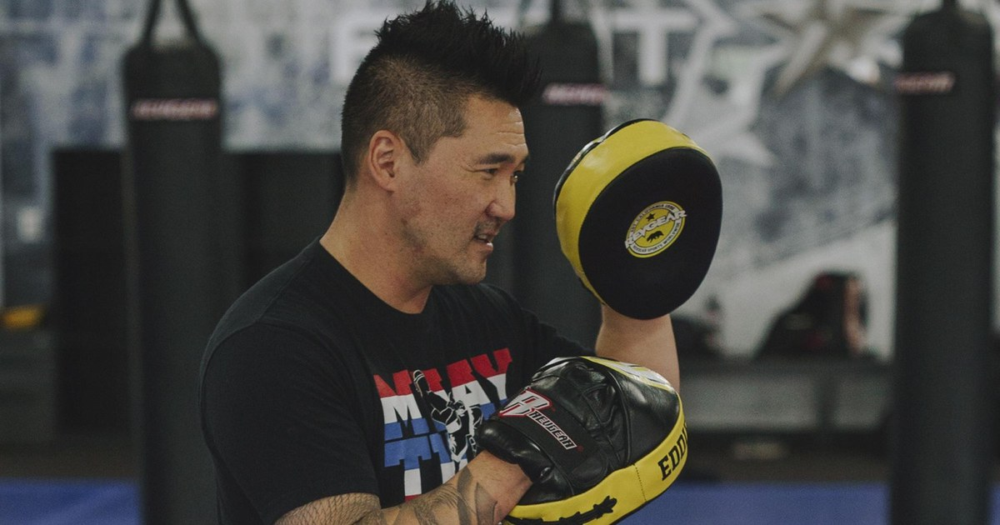

Eddie Cha dies at 53 — the striking coach behind Cejudo, Korean Zombie and a generation of UFC fighters
Renowned striking coach Eddie Cha, the head striking coach at Fight Ready MMA who helped turn Henry Cejudo into a two-division champion, died Tuesday at 53. No cause of death has been publicly revealed.

Disclosure: this post contains affiliate links. I earn a commission on qualifying purchases.
The news
The MMA world lost one of its most respected teachers on Tuesday.
Eddie Cha, the renowned striking coach and head striking coach at Fight Ready MMA in Glendale, Arizona, died at 53. The news first circulated Tuesday through tribute posts from fighters and friends, including former UFC fighter Michael Chiesa and one of Cha's first UFC fighters, Francisco Rivera. Iridium Sports Agency confirmed the news in a public statement, and people connected to Fight Ready confirmed it directly to MMA Junkie. No cause of death has been publicly revealed.
The coach
Cha was not a household name to casual fans, but inside the sport he was one of the most trusted striking minds in the game. He spent years as a striking coach and mitt holder at Fight Ready, working with dozens of UFC fighters — and his fingerprints are on some of the biggest careers of the last decade.
His most famous project was Henry Cejudo. Cha played a major role in transforming Cejudo from an elite wrestler into a two-division UFC champion, building the striking game that carried "Triple C" to titles at flyweight and bantamweight. He also worked closely with Chan Sung Jung — "The Korean Zombie" — along with former heavyweight champion Jon Jones, strawweight champion Zhang Weili, Deiveson Figueiredo, Benson Henderson, Kelvin Gastelum, Tracy Cortez, Mackenzie Dern and Casey O'Neill.
The road to Fight Ready
Cha's path to the corner was an unusual one. He became a full-time coach after a career as a professional poker player, opening his own All In MMA gym in Buena Park, California. He moved to Arizona in 2016, began training at MMA Lab in Phoenix, and eventually found his home at Fight Ready, where he coached alongside Santino Defranco and Brady Fink and became one of the gym's most recognizable figures.
He was, by every account from the people who knew him, a coach who gave everything to his fighters. Iridium Sports Agency's statement called him "one of the most successful, passionate and selfless coaches in MMA."
What it means
Fifty-three is far too young, and the tributes that poured in on Tuesday made clear how wide Cha's reach was — from champions he built to the dozens of fighters he held mitts for every day in Glendale. The sport does not have many coaches who shape a generation the way he did, quietly, from the corner.
No memorial arrangements have been announced. The cause of his death has not been disclosed.
Sources
• Renowned MMA coach Eddie Cha dead at 53 (MMA Junkie)
• Fight Ready MMA coach Eddie Cha dies (BJPenn.com)
• MMA Coach Eddie Cha Dead at Age 53 (Heavy)
• Fight Ready MMA Coach Eddie Cha Dies at 53 (FightBook MMA)
Gear up: Fanatics